Главное
9 мая 2025 году исполняется 80-ти летие Победы в Великой Отечественной Войне. Также, Президент Российской Федерации Владимир Путин объявил 2025 год - Годом защитника Отечества.
В честь такого важного события, в этой веб-странице собраны важные ключевые события и значимые даты, произошедшие во время великой войны.
События
Битва за Москву
(1941-1942)
Битва за Москву — первое решающее сражение Великой Отечественной войны. Столица СССР имела стратегическое значение: от результата сражения за Москву зависел исход войны. При защите главного города нашей Родины тысячи бойцов и командиров проявили невиданный героизм. Начав осенью 1941 года поход на Москву при подавляющем преимуществе в войсках и технике, немецкие полчища были разбиты и отброшены. Весь мир увидел, что Красная Армия не сломлена, она способна побеждать. Советские люди воспрянули духом.
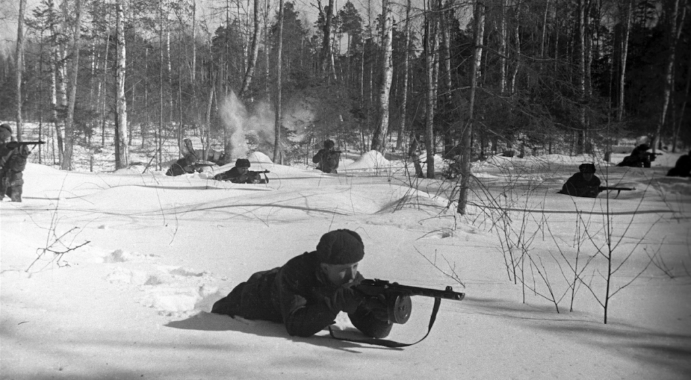В ходе наступления Красной Армии немцы были отброшены от столицы на 100–350 километров, от врага полностью очищены Московская, Тульская, Калининская, Рязанская области, частично освобождены Смоленская и Орловская. За провал под Москвой десятки высших немецких военачальников были сняты Гитлером со своих постов.
Около миллиона защитников столицы были награждены медалью «За оборону Москвы», 110 человек удостоены звания Героя Советского Союза. В мае 1965 года, к 20-летию Победы, Москве было присвоено высокое звание «Город-герой».
Оборона Ленинграда
(1941-1944)
Блокада Ленинграда началась 8 сентября 1941 года. В планах гитлеровских оккупантов было стереть с лица земли город и уничтожить всех его жителей. Осаждённый Ленинград 872 дня боролся за жизнь. Ежедневные бомбардировки и страшный голод не сломили ленинградцев, они продолжали жить и бороться. Оборона Северной столицы и её блокада преподнесли беспрецедентный урок стойкости и мужества не только нашей стране, но и всему миру. Ленинград был окончательно освобождён от блокады 27 января 1944 года.
«Дорога Жизни»
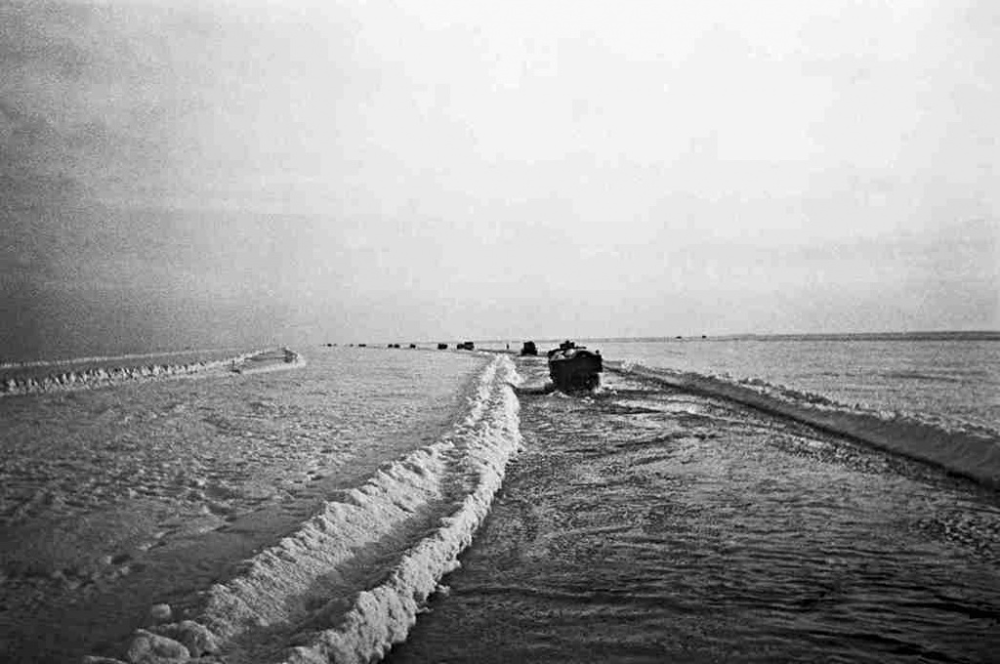Единственной надеждой на спасение для сотен тысяч ленинградцев стала эвакуация и доставка продовольствия по Ладожскому озеру — летом по воде, зимой по льду. Эта трасса получила название «Дорога жизни». Доставка людей и грузов в период блокады по этой трассе по праву может сравниться с величайшими операциями Великой Отечественной войны. Как только в конце ноября 1941 года Ладога покрылась льдом, руководство Ленинграда организовало через озеро переброску продовольствия в город на грузовых машинах. Обратно эвакуировалось голодающее население. По «Дороге жизни» до весны 1943 года было доставлено 1,6 миллиона тонн грузов и эвакуированы 1,3 миллиона ленинградцев. Порой грузовики проваливались под лёд, но колонна продолжала движение, даже под обстрелом. По дну Ладожского озера удалось уложить трубопровод и электрический кабель.
Итоги
Если бы враг взял город, все его жители были бы обречены на гибель, а немцы смогли бы перебросить значительные силы под Москву и Сталинград. В пригородах Ленинграда гитлеровцы и их пособники-коллаборационисты из эсэсовских прибалтийских подразделений расстреливали и вешали ни в чём не повинных женщин, детей, стариков. Великолепные архитектурные ансамбли пригородов Ленинграда — Гатчины, Царского Села, Петергофа — были разграблены и уничтожены оккупантами.
Ленинград выстоял и одержал великую победу над врагом — и военную, и моральную.
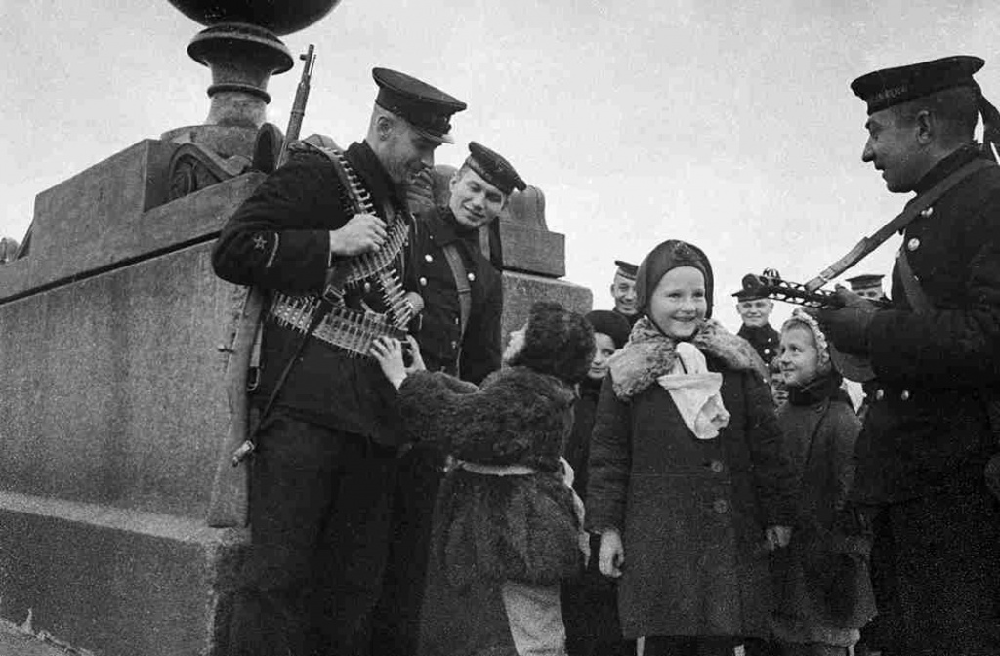Сталинградская Битва
(1942-1943)
Летом 1942 года началась невиданная по своему значению, размаху и напряжению битва на подступах к Дону и Волге. 200 дней и ночей Красная Армия перемалывала отборные соединения Германии и её союзников. Сталинградская битва, которая изменила историю и переломила ход всей Второй мировой войны, продлилась с 17 июля 1942 года по 2 февраля 1943 года и закончилась полной победой советских войск. Оборонительный этап операции продолжался до 18 ноября 1942 года, а с 19 ноября начался наступательный этап.
Центром противостояния в Сталинграде стал Мамаев курган, с которого можно было просматривать и обстреливать значительную часть города. Эта высота переходила из рук в руки несколько раз. До берега Волги многим немецким частям оставалось пройти всего 150–200 метров, но они так и не смогли этого сделать. На выручку обороняющимся в ночь на 15 сентября под жесточайшим вражеским обстрелом через Волгу была переправлена 13-я гвардейская дивизия генерала Александра Родимцева, которая с ходу вступила в бой и отбила у противника Мамаев курган.
Враг бросал под Сталинград всё новые силы, доведя число своих дивизий на этом направлении с 38 до 80. С юга для удара по городу была переброшена 4-я танковая группа. Постепенно овладение Сталинградом превращалось из второстепенной в главную цель всей кампании вермахта. Гитлер и его генералы были полны решимости взять один из важнейших городов советского государства, носящий имя его вождя. Германская авиация 23 августа нанесла массированный бомбовый удар по городским кварталам. В огне пожарищ погибли более 40 тысяч сталинградцев. Нефть вылилась в Волгу и загорелась. Происходящее напоминало настоящий ад.
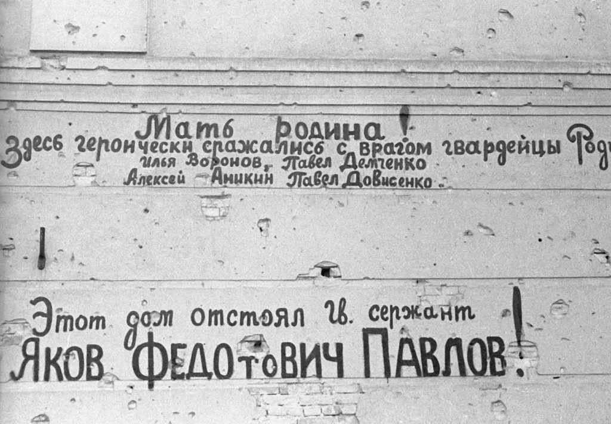Сержант Яков Павлов вместе со своими немногочисленными товарищами захватил у немцев и почти два месяца оборонял дом недалеко от набережной. Дом, у которого нашли могилу сотни солдат вермахта, потом так и назвали — «Дом Павлова».
Отважно действовали в руинах Сталинграда советские снайперы. Легендой стала боевая работа снайпера Василия Зайцева, уничтожившего 225 вражеских солдат. Но это был не единственный в Сталинграде снайпер-ас. Бывший нанайский охотник Максим Пассар уничтожил 272 фашиста; пришедший на фронт с завода «Красный Октябрь» Пётр Гончаров — 400.
Итоги
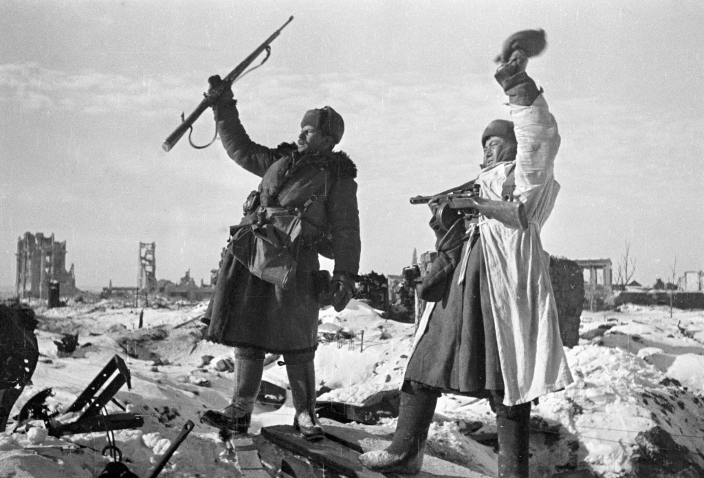Сталинградская битва обозначила общий перелом в ходе не только Великой Отечественной войны, но и всей Второй мировой. Враг, лишившись сотен тысяч опытных солдат и офицеров, вынужден был отступить с Северного Кавказа, оставить Ставрополье, Кубань, Ростов-на-Дону. В январе 1943 года была прорвана блокада Ленинграда. В марте 1943 года под влиянием поражения в Сталинградской битве немцы очистили территорию Ржевско-Вяземского выступа и более уже никогда не угрожали безопасности Москвы. Теперь всему миру стало понятно, что СССР не проиграет войну нацистской Германии, а будет и дальше наступать до полного поражения гитлеровского блока.
В период Сталинградской битвы немцы и их союзники (итальянцы, румыны, венгры, хорваты) потеряли около 1,5 миллиона человек. Потери Красной Армии составили 1 129 619 человек.
Операция «Багратион»
(1944)
Белорусская стратегическая наступательная операция Красной Армии (23 июня – 29 августа 1944 года) с кодовым наименованием «Багратион» стала примером военного искусства. Она же была главным событием на советско-германском фронте в 1944 году. Наши войска освободили Белоруссию, большую часть Литвы, восточные районы Польши. Красная Армия нанесла удар, вектор которого был направлен к центру германского нацизма — на Берлин. В моральном плане операция «Багратион» стала возмездием за поражения наших войск в Белоруссии летом 1941 года.
На Тегеранской конференции в конце 1943 года англо-американские союзники наконец дали согласие на высадку своих войск во Франции в мае 1944 года. В свою очередь Иосиф Сталин обещал, что Красная Армия после завершения сражений в Европе вступит в войну с Японией. Советский лидер также сказал, что командование РККА в период десантной операции союзников «Оверлорд» организует на своём фронте мощное наступление на одном из важнейших участков.
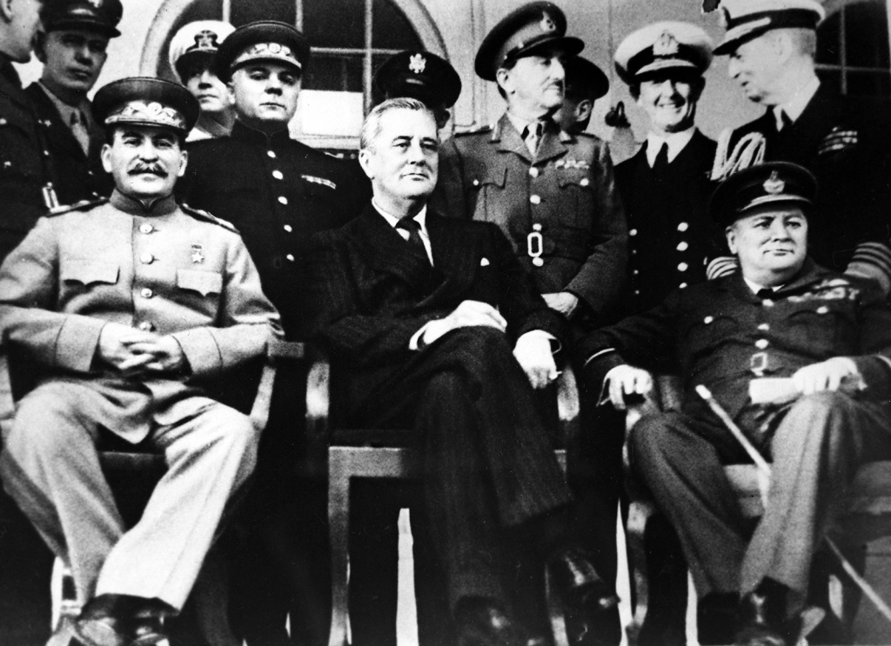Между тем советские наступательные операции в восточных районах Белоруссии в конце 1943 года – начале 1944 года принесли лишь неоправданные потери. В результате широкого наступления на Правобережной Украине и отсутствия успехов в Восточной Белоруссии на центральном участке советско-германского фронта образовался так называемый «Белорусский балкон», который нависал над советскими войсками на Украине и не давал развивать наступление в направлении Минска, Варшавы, Берлина. Этот выступ во что бы то ни стало нужно было срезать.
Подготовка
Для исправления ситуации Ставка решила прежде всего провести кадровые перестановки. На руководство 1-го, 2-го, 3-го Белорусских и 1-го Прибалтийского фронтов были назначены опытные, решительные и талантливые военачальники — генералы Константин Рокоссовский, Георгий Захаров, Иван Черняховский и Иван Баграмян. Иван Черняховский стал тогда самым молодым командующим фронтом. Ему шёл 38-й год, но он уже прославился в боях под Воронежем, Курском и на Украине. Координацию действий советских фронтов в Белоруссии осуществляли маршалы Георгий Жуков и Александр Василевский.
В начале 1944 года советское командование вместе с союзниками проводило операцию по дезинформации противника («Бодигард»), демонстрируя намерение атаковать летом 1944 года или на Крайнем Севере, или на юге. Эта дезинформация помогла как высадке союзников в Нормандии, так и нашему наступлению против группы армий «Центр». Около двух третей своих танковых дивизий на советско-германском фронте вермахт держал южнее Белоруссии.
Начало
В третью годовщину германского нападения на СССР, 22 июня 1944 года, советские войска провели разведку боем, а на следующий день основные ударные группировки Красной Армии перешли в наступление. Операция началась на несколько дней раньше намеченного: нужно было идти на помощь партизанам, против которых действовали карательные и регулярные части гитлеровцев.
Уже через несколько дней германские дивизии были окружены и уничтожены в районах Витебска, Бобруйска и Могилёва. Фронты Рокоссовского и Черняховского устремились к Минску. 3 июля танки 5-й гвардейской танковой армии и 1-го гвардейского танкового корпуса освободили столицу Советской Белоруссии. Сегодня этот день празднуется как День независимости Республики Беларусь. Восточнее Минска в июле 1944 года в гигантском «котле» оказались десятки немецких дивизий. В германской обороне возникла огромная брешь, закрыть которую командованию вермахта было нечем. Советское наступление безостановочно катилось на запад.
Народая Война
Большую помощь регулярной армии оказывали партизаны. Партизанское движение развернулось на оккупированных территориях СССР с первых дней войны. В Ленинградской, Новгородской, Калининской, Смоленской, Курской областях, в Белоруссии и на Украине возникли целые партизанские районы, куда боялись заглядывать немецкие охранные подразделения и каратели-коллаборационисты. Партизанами было освобождено свыше 200 квадратных километров нашей территории, где действовала советская власть. Всего за годы войны появилось более 6 тысяч партизанских отрядов, в которых воевали около 1 миллиона бойцов. Партизаны отвлекли на себя 10% вражеских сил, пустили под откос 20 тысяч эшелонов, взорвали 12 тысяч мостов. Огромную поддержку партизанам оказывали органы НКВД, забрасывавшие в немецкий тыл диверсионные группы.
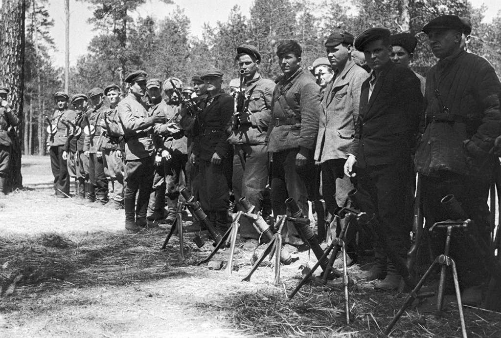Итоги
Летом 1944 года Красная Армия разбила мощнейшую германскую группу армий «Центр». Её остатки были отброшены на запад на 550–600 километров. По существу гитлеровское командование было вынуждено создавать новый фронт. 17 дивизий и 3 бригады противника были полностью уничтожены, а 50 дивизий лишились более половины своего состава. Были освобождены сотни тысяч квадратных километров территории СССР и Польши, созданы условия для проведения широких наступательных операций на других участках советско-германского фронта.
Победа досталась дорогой ценой. Только безвозвратные потери Красной Армии составили 178 тысяч человек. Но в германских войсках погибло и пропало без вести 409 тысяч солдат и офицеров, взято в плен более 158 тысяч.
Операция «Багратион» по праву считается одной из наиболее успешных за всю Великую Отечественную и Вторую мировую войну. Победа была достигнута благодаря мужеству и героизму наших воинов и полководческому таланту наших военачальников. «Золотой Звездой» Героя Советского Союза были награждены за освобождение белорусской земли 1,6 тысячи человек, среди них полководцы Иван Баграмян, Константин Рокоссовский, Иван Черняховский, Александр Горбатов, Афанасий Белобородов. В ходе операции «Багратион» Москва 36 раз салютовала доблестным войскам, отличившимся в ожесточённых боях.
Штурм Берлина
(1945)
Берлинская операция Красной Армии (16 апреля – 8 мая 1945 года) стала завершающей битвой Великой Отечественной войны. Падение столицы Третьего рейха 2 мая 1945 года означало, что гитлеровская Германия потерпела полный крах. Вечером 8 мая 1945 года в пригороде Берлина Карлсхорсте подписан акт о безоговорочной капитуляции Германии. В Москве было уже 9 мая.
Кто будет брать Берлин?
В начале 1945 года вопрос о том, кто первым войдёт в Берлин, был одним из основных в отношениях между англо-американскими союзниками и СССР. Ещё в феврале войска 1-го Белорусского фронта маршала Георгия Жукова вышли к реке Одер. До Берлина по прямой оставалось около 60 километров.
В марте советскому руководству стала поступать информация, что среди союзников активно дискутируется возможность первыми захватить Берлин. Стремление западных союзников взять столицу Германии первыми было обусловлено политическими причинами — желанием принизить решающую роль Красной Армии в разгроме нацизма, получить приоритет в вопросах послевоенного устройства Европы.
На Берлин!
Утром 16 апреля передовые позиции врага были буквально сметены с лица земли советской артиллерией и авиацией, неудержимая атака советских ударных частей быстро прорвала первую полосу вражеской обороны. Но в дальнейшем войска 1-го Белорусского фронта Георгия Жукова встретили серьёзное сопротивление на хорошо укреплённых Зееловских высотах. На подступах к Берлину завязались тяжёлые бои.
Войскам 1-го Украинского фронта противостояли меньшие по численности вражеские части. Форсировав реку Нейсе, Иван Конев ввёл в бой свои танковые армии и быстро продвигался к юго-восточным предместьям Берлина.
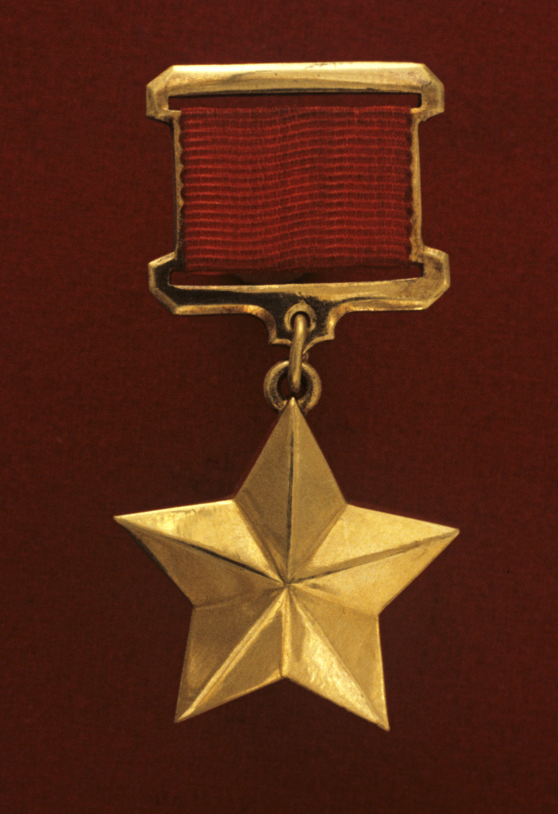Победа
Поздним вечером 8 мая в пригороде Берлина Карлсхорсте Маршал Советского Союза Георгий Жуков принял вместе с представителями американского, английского и французского командования безоговорочную капитуляцию Германии.
В СССР 9 мая был объявлен Днём всенародного торжества — Праздником Победы. Сотни тысяч москвичей высыпали тогда на улицы города посмотреть на величественный праздничный салют. Тогда же, 9 мая 1945 года, была учреждена медаль «За победу над Германией в Великой Отечественной войне 1941–1945 гг.». Сегодня День Победы торжественно празднуется в России каждый год. Проходит шествие «Бессмертного полка», возлагаются цветы к Могиле Неизвестного Солдата, молодёжь встречается с ветеранами. Память о Победе, достигнутой ценой жизни 26,6 миллиона советских людей, — священна.
Итоги
(1945)
Решающий вклад в победу над нацизмом внесла Красная Армия, весь советский народ, на плечи которого обрушились тяготы военного времени. Наша страна заплатила высочайшую цену за разгром мирового зла — фашизма. За годы Великой Отечественной войны погибли 26,6 миллиона советских граждан. В СССР агрессорами было разрушено 1,7 тысячи городов, уничтожено 70 тысяч деревень, миллионы людей были вынуждены после войны ютиться в землянках и бараках, бедствовать и голодать.
Советский солдат не просто освободил родную землю от гитлеровцев — он дал возможность выжить и сохранить национальную самостоятельность народам европейских стран, которые оккупировала или подмяла под себя гитлеровская диктатура. Советские воины спасли мир.
ООН
Новая послевоенная система международных отношений — Ялтинско-Потсдамская — была сформирована при непосредственном участии Советского Союза. На её фундаменте выросли основные принципы поддержания мира.
В 1945 году была создана Организация Объединённых Наций (ООН), призванная сохранять и оберегать глобальную безопасность на планете и противодействовать агрессивным силам.
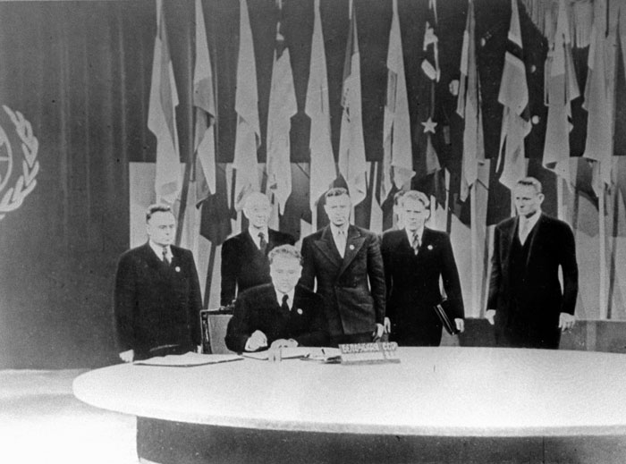То, что человечество избежало в послевоенное время нового всеуничтожающего конфликта, — заслуга всех ответственных членов ООН, выступавших за разрядку напряжённости в мире. Послевоенная организация всемирной безопасности оказалась намного эффективнее её предшественницы — Лиги Наций, сформированной без участия России. В Совет Безопасности ООН вошли пять постоянных членов: СССР, США, Великобритания, Франция и Китай.
Нюрнбергский Процесс
Международный военный трибунал, заседавший в 1945–1946 годах в Нюрнберге, стал важнейшим и уникальным событием в истории человечества. По его итогам были осуждены германский фашизм и главные нацистские военные преступники. Они расплатились за уничтожение миллионов людей и целых государств. Античеловеческая суть фашизма была явлена миру, получила правовую, моральную и политическую оценку.
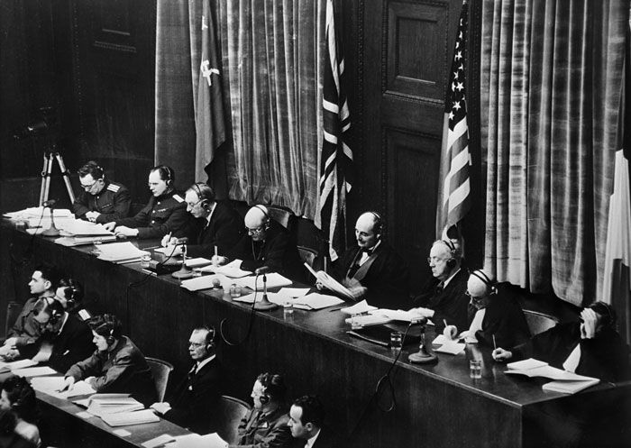Приговор
Нюрнбергский трибунал признал преступными такие организации, как СС, СД, гестапо, а также весь руководящий состав нацистской партии. Гитлер покончил жизнь самоубийством в Берлине 30 апреля 1945 года, но большинство других главных военных преступников были схвачены союзными войсками.
По результатам Международного военного трибунала к смертной казни через повешение были приговорены 12 человек (Г. Геринг, М. Борман, Э. Кальтенбруннер, И. Риббентроп, В. Кейтель, А. Йодль, А. Розенберг и др.). Из них один был приговорен к смерти заочно (М. Борман) и один покончил жизнь самоубийством накануне казни (Г. Геринг). К пожизненному заключению приговорены три преступника, к 20 годам — два, к 15 годам — один, к 10 годам — один, оправданы — три (советская сторона выступала против такого оправдания). 12 последующих (малых) Нюрнбергских процессов были организованы американским военным командованием в 1946–1949 годах над нацистами меньшего ранга. В ходе этих процессов были осуждены ещё десятки военных преступников.
Россия — Защитница Правды
К сожалению, не все уроки Второй мировой войны выучены. Сегодня в ряде стран сквозь пальцы смотрят на возрастание неонацизма, чествование ветеранов войск СС. Такие государства забывают о роли советского солдата в их освобождении, но заботятся о памяти коллаборационистов, убивавших в годы войны мирных людей.
Российская Федерация остается сегодня главным защитником правды о Второй мировой и Великой Отечественной войне. Нельзя забывать о величайшей трагедии ХХ века.
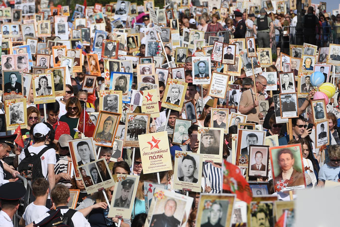В России память о войне и Победе 1945 года свято чтится. Охранять её, воспитывать новые поколения на примерах героизма советских воинов государству помогают общественные организации.